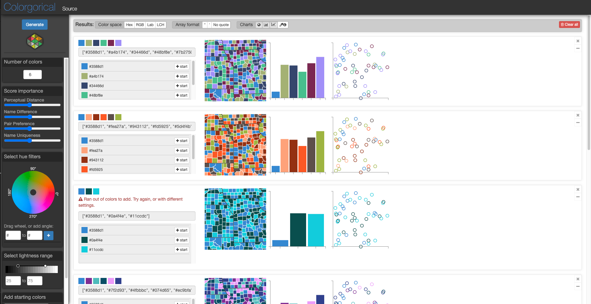
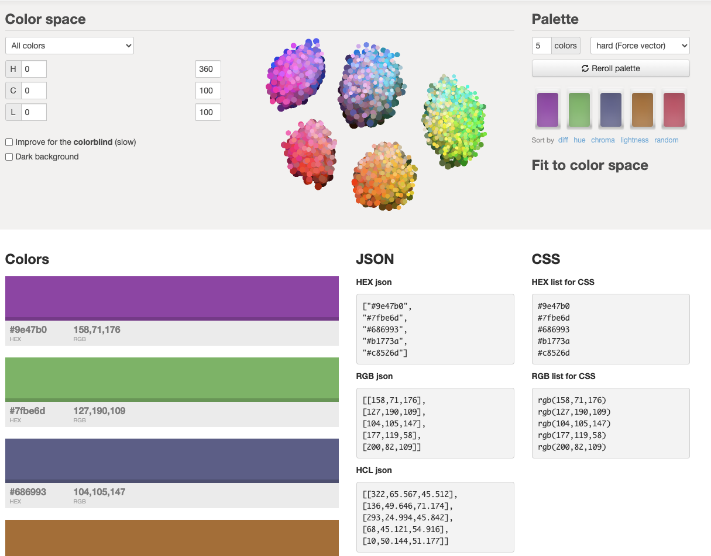

Color
Personal Portfolio
This page covers my comparative review of the two color tools Colorgorical and VizPallette
Extension
The two color tools I will be comparing are Colorgorical and iWantHue. Both of these tools are used to auto generate color palettes for visualizations based on the user's preference. The color palette of a visualization is key to conveying the right message to the viewer. We will explore how each of these tools generate their palettes, the customization ability they provide, and compare them.
Upon first view, Colorgorical was easier to understand than iWantHue. It allows the user to adjust setting for the palette on the side bar including how many colors to include, the importance of settings such as name difference and perceptual distance, filtering the hue using a color wheel, and the range of lightness. Lastly, the user can also include any starting colors they want to make sure are included. Instructions are also provided on how to use the application in text form on the main page. After the palette has been generated, example visualizations are displayed at the top of the page so you have an idea of what your palette looks like when it is used.

With iWantHue, it initially looked more confusing and harder to understand, however after going through their video tutorials, I learned how easy and customizable their interface is. With iWantHue, the color space that your palette will generate from is displayed in the middle of the page. As you adjust the settings, the color space will shift. There are three sliders which you use to choose the range of the palettes color hue, chroma, and lightness. You can use this slider to include and emit colors in each range. In addition, the user is able to select a preset from a drop down menu. For example, if you need a palette that is colorblind friendly, you can select Colorblind friendly from the drop down and it will preset the hue, chroma, and lightness to include colorblind friendly colors. iWantHue does not provide any example visualizations, so you would have to plug your palette into Viz Palette to see examples of what your palette would look like.

Comparing the two tools, I overall found iWantHue to be the better of the two. This comes down to customizability of the palette, ease of use, as well as the ability to provide palettes which are colorblind friendly. In addition, iWantHue documents their instructions better than Colorgorical. Though Colorgorical does provide customizability by allowing the user to adjust the color range on the color wheel, this does not compare to how iWantHue shows the live change of the color space. Something Colorgorical does do better is allowing the user to add starting colors which must bee in the palette, this is not a feature i see in iWantHue.
Reflection
I chose to extend on the color activity because color has always been a difficult thing for me to understand in visualizations so I felt it was important for me to explore this topic further. I learned that I have some type of colorblindness, particularly with greens and reds, so I wanted to explore these different tools and see how they can adhere to my color deficiency.
I learned that there are tools out there that are great for generating color palettes for people with color deficiency. One of the tools I explored, iWantHue, has an exact range of colors specifically for people who suffer from color blindness. I was able to generate a green/red palette where I was able to separate the colors easier than I ever was. This feature surprised me and I will definitely come back to this tool in the future. I also learned just how important the palette you use for a visualization is. If you use colors that are hard for people with color deficiency to understand then that is a whole pool of people who will not be able to interpret your visualization.
I will use the techniques I learned from this activity in the future whenever I need to create a color palette for a visualization. There are many instances where I may need to present data; whether it be to my team in the workplace or even at home to my friends and family, being able to select the best palette of colors for a visualization is a great skill to have. In one of my past internships, my boss liked to have results visualized. Back then I did not have a great understanding of how to use color for visualizations, so my presentations always just used the default color settings, which did not help my work stand out. For the future, I now know how to generate and encode color palettes to suit a visualization.
The vast customizability in the iWantHue tool is what really sparked my interest and curiosity. I spent some extra time playing with the tool and generating a lot of different palettes. I really liked the dropdown menu where you are able to preset the color settings to fit a style that you want.